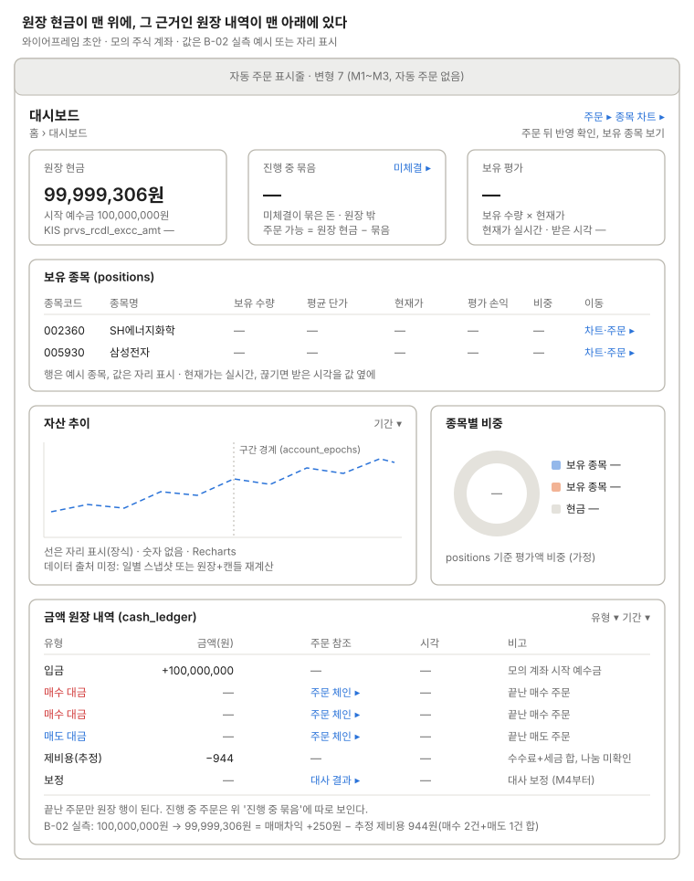

대시보드 (원장 기반)
내부 원장 잔고, 금액 원장 내역, 자산 추이, 종목별 비중(Recharts).

위 카드의 원장 현금은 아래 원장 행의 합이고, 진행 중 주문의 묶음은 원장 밖 카드로 따로 보인다.
주문 가능 금액 = 원장 현금 − 진행 중 묶음이다. 카드 밑에 보유 종목 표(positions, 현재가는 실시간)를 두고, 수수료·세금은 KIS가 합친 추정치만 주므로 원장에 "제비용(추정)" 한 행이다(결정 2026-10-16). 매수는 빨강, 매도는 파랑이다. 원장 현금 옆에 KIS prvs_rcdl_excc_amt를 작게 둬 M4 대사 전에도 어긋남을 본다(제안). 자산 추이의 데이터 출처(일별 스냅샷 테이블 또는 원장+캔들 재계산)는 정하지 않았다.
쓰는 공통 UI
화면 틀 · 자동 주문 표시줄 (변형 7, 자동 주문 없음) · 상태 표시명 (금액 원장 유형) · 주문 체인 행 (주문 참조 링크가 여는 곳)
상태
| 상태 | 보일 것 |
|---|---|
| 불러오는 중 | 카드·표·차트 자리에 빈 틀 |
| 조회 오류 | 오류 문구 + 다시 시도. 직전 값이 있으면 "오래된 값"과 기준 시각 |
| 원장 반영 대기 | orders.ledger_status = 대기: 끝난 주문인데 원장 행이 아직 없다. 원장 표 위에 "반영 대기 N건" 줄, 주문 체인 링크 |
| 원장 반영 실패 | orders.ledger_status = 실패: 위험색 줄에 ledger_error 원인과 주문 체인 링크. 그 계좌의 반영이 멈췄다고 알린다(plan.md 4.6) |
| 실시간 끊김 | 보유 평가·현재가 값 옆에 받은 시각, "오래된 값" |
| 부분 체결 중 | 진행 중 묶음에 남아 있다. 원장 행은 주문이 끝날 때 생긴다. 묶음 금액 계산은 가정 |
| 원장에 입금만 있음 | 원장 표는 입금 한 행, 보유 종목 표는 "보유 종목이 없습니다", 비중은 현금만 |
| 자산 추이 첫날 | 점이 하나뿐이라 차트 대신 "다음 거래일부터 추이가 보인다" 빈 상태 |
화면 규칙
- 데이터:
cash_ledger(DEPOSIT/BUY/SELL/FEE/TAX/ADJUST),positions - 주의: 원장에는 끝난 주문만 들어간다. 진행 중 주문은 묶음으로 따로 보인다. 수수료·세금은 추정치(
prsm_tlex_smtl)라 "제비용(추정)" 한 행으로 표시한다. 대사 보정은ADJUST행으로 보인다